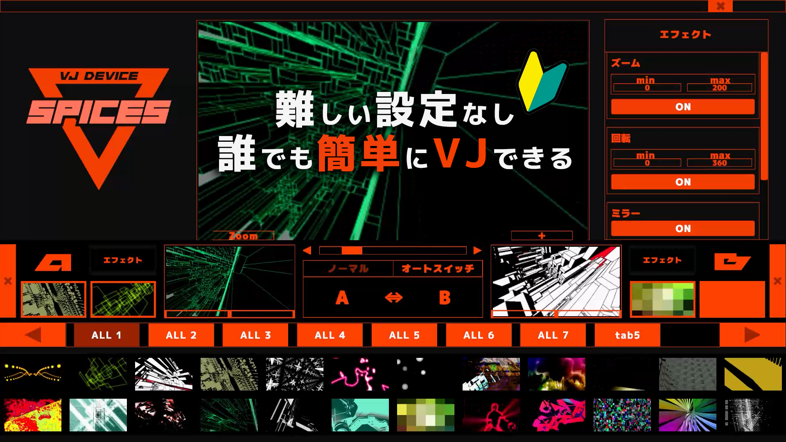
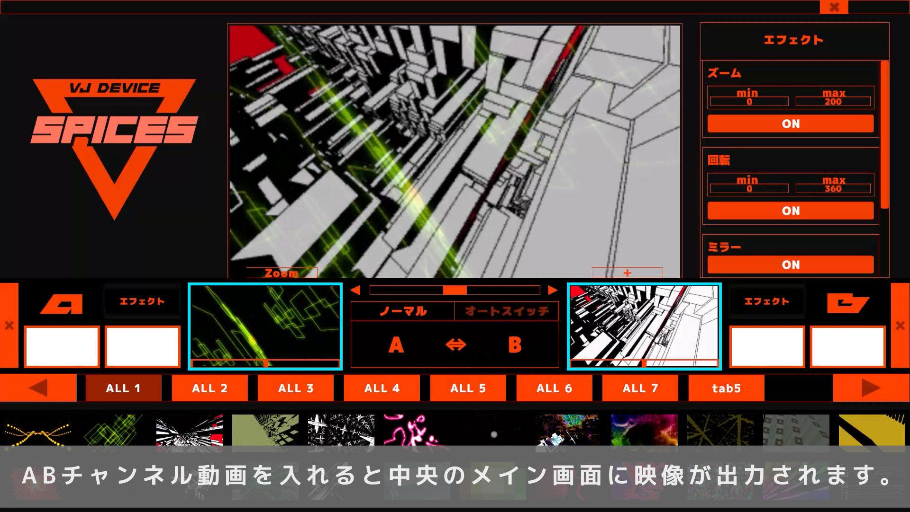
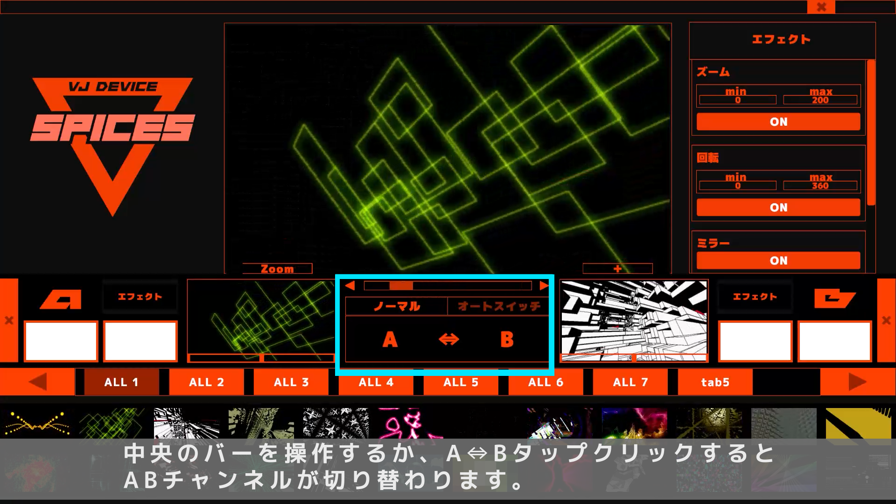
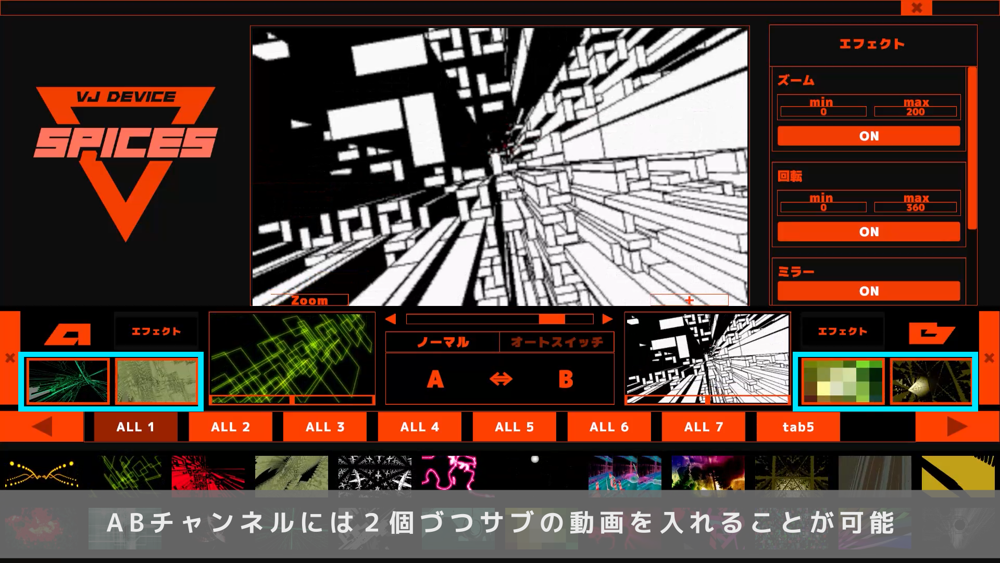
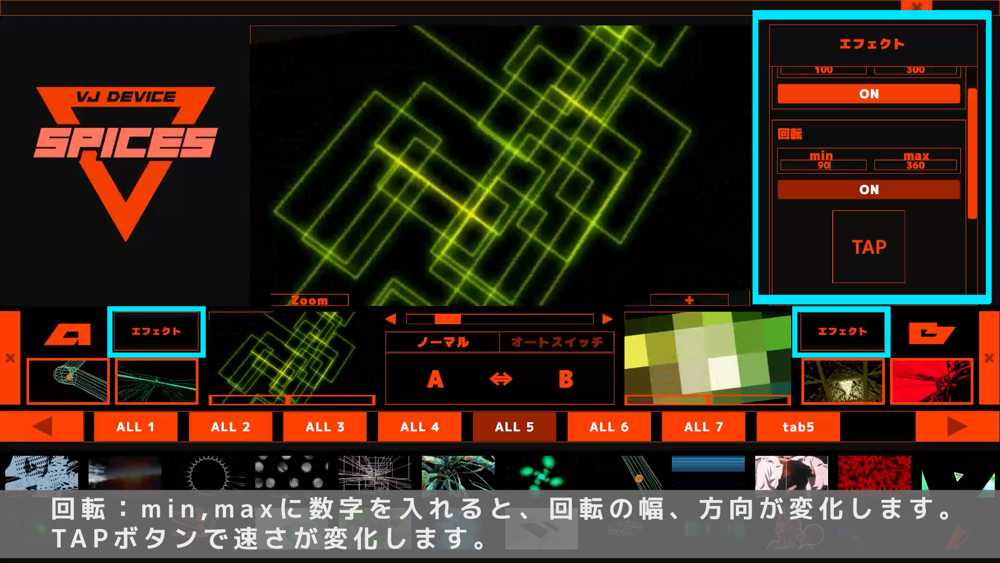
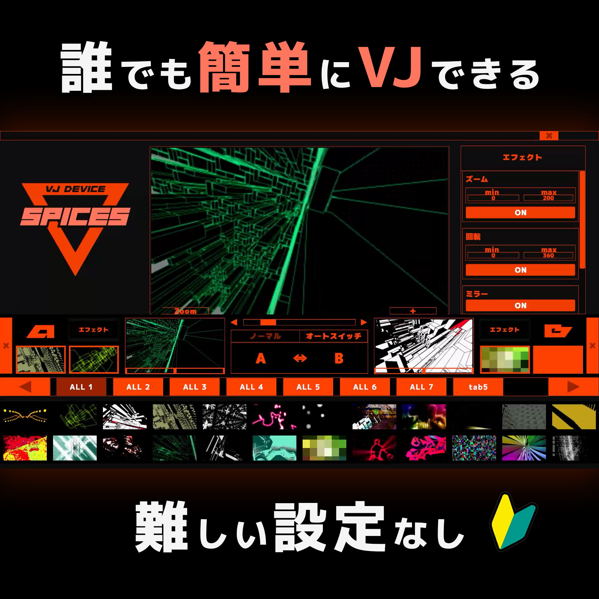

難しい設定なし、誰でも簡単にVJできる！
ノートPCひとつで、空間を支配する映像演出ツール『SPICES』

Concept
圧倒的にシンプルで直感的
「VJをやってみたいけれど、専門ソフトは難しそう…」「機材の設定や同期が大変そう…」と諦めていませんか？
『SPICES』は、そんなハードルをすべて無くしたVJツールです。
複雑なBPM同期や面倒な初期設定は一切不要。買ったその日から、ノートPCとプロジェクターだけでプロっぽい空間演出が可能です。
Scenes
こんなシーンの演出に大活躍！
💍 結婚式・二次会
披露宴やパーティーのBGMに合わせて、華やかな映像を直感的にスイッチング。
🏫 学校のイベント
文化祭のステージ、部活の発表会などを最新の映像演出で一気にプロのクオリティに。
🏢 会社のイベント
表彰式や社内パーティーなどの空間を、サイバーでカッコいい映像で彩ります。
🎧 DJ・クラブイベント
音を聴きながら指先ひとつでリアルタイムに空間をコントロール。商用利用もOK！
Features

A/Bチャンネル クロスフェーダー
2つの動画をフェーダー操作で滑らかにミックス・切り替えができます。

直感的なメディア管理
フォルダ分けで自動タブ生成。ドラッグ＆ドロップで瞬時に動画を割り当て可能。

マルチディスプレイ対応
手元の「プレビュー画面」と出力用の「本番画面」を完全に分離して出力できます。

ワンタッチ エフェクト
Roll, Zoom, Mirror, Blur の4つの強力な視覚効果をボタン一つでリアルタイム適用。

📊 仕様・対応フォーマット
- 動画: .mp4 / .mov / .avi / .wmv
- 推奨コーデック: H.264 / H.265 (HEVC)
- 画像: .png / .jpg / .jpeg
- 価格: ¥1,000 (製品版買い切り)
- 商用利用: イベント、ライブ配信などで全面的に許可
💻 動作環境 (Windows版)
- OS: Windows 10 / 11 (64bit)
- CPU: Intel Core i5 / AMD Ryzen 5 以上
- メモリ: 8GB以上 (16GB以上を強く推奨)
- GPU: GTX 1060 以上 (4K動画使用時はRTX 2060等推奨)
- ストレージ: SSD環境 必須
※4K動画を使用する場合はハイスペックな環境を推奨します。
🚀 準備はたったの3ステップ！
1
アプリと同じ場所に Videos フォルダを作成
2
フォルダ内に好きな動画素材を入れる（サブフォルダで自動タブ分け！）
3
アプリを起動し、A/Bチャンネルへドラッグ＆ドロップで再生開始！
Get SPICES Today
直感と熱狂。あなたのインスピレーションを即座に映像へ。